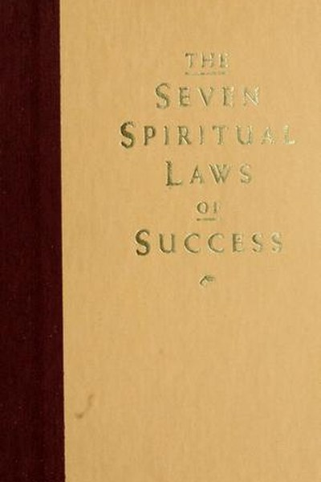

Library › Self-Improvement
The Seven Spiritual Laws of Success — Summary & Key Lessons

Success without struggle — seven laws drawn from natural order.
📖 OPEN THE FULL INTERACTIVE BREAKDOWN →🌐 Read it in Hindi, Hinglish, Gujarati, Tamil & 22 more languages — free, with audio.
💡 The Big Idea
Forced success — ambition, hustle, control — creates stress and fragile results. Chopra argues that nature runs on effortless order, and so can you: when you align your life with seven spiritual laws, the right opportunities, people and outcomes arrive with less strain. Success becomes an expression of your nature rather than a trophy you chase.
🧠 The 7 Key Lessons
Lesson 1: Pure Potentiality — Silence Is a Resource
Law 1
Beneath all thought and activity lies a field of pure potentiality — the source of all creativity. Chopra's practice is simple: spend time in silence daily, connect with nature, and do non-judging awareness. The lesson: constant doing depletes the well. People who are always busy eventually have nothing new to offer; people who cultivate stillness stay creative for decades.
📖 Example: Chopra points to meditation as the technology for accessing this field — even 15 minutes of daily silence measurably changes stress, focus and decision quality. The practical edge: 'pure potentiality' is not a one-time decision — it's a habit that compounds… Read the full example →
⚡ Do this: Schedule 15 minutes of complete silence (no phone, no music) before your day starts, for the next 7 days.
Lesson 2: Giving and Receiving Are One Flow
Law 2
The universe operates through dynamic exchange: giving and receiving are two ends of one current. Hoarding — time, money, praise, help — blocks the flow; giving keeps it moving. The lesson is practical, not sentimental: generosity is a strategy of abundance. The giver stays connected to resources, people and opportunities; the hoarder slowly starves in the middle of plenty.
📖 Example: Chopra suggests 'wherever you go, give something' — a compliment, a coin, a genuine moment of attention — as a daily practice that rewires your relationship with scarcity. Read the full example →
⚡ Do this: Today, give three things: a sincere compliment, a small amount of money, and your full attention to one person.
Lesson 3: Karma Is Conscious Choice
Law 3
Every action generates a force that returns to you — karma is simply cause and effect. Chopra's twist: karma is not fate; it is feedback. You can't undo the past, but you can change the future by making conscious choices now. The practical tool is 'karmic accounting' — before deciding, ask: what are the consequences of this choice for me and for everyone it touches?
📖 Example: Chopra frames every choice as a fork: unconscious choices repeat your patterns, conscious choices begin new ones. The 'right' choice is the one you can own fully. The real test of this lesson is a bad day: the principle that survives a crisis, a tight… Read the full example →
⚡ Do this: Before your next significant decision, write down its likely consequences for yourself and three other people. Choose deliberately.
Lesson 4: Least Effort — Accept, Then Act
Law 4
Nature's intelligence functions with effortless ease — grass grows without straining. Chopra's three components: acceptance (things are as they are), responsibility (don't blame, respond), and defenselessness (drop the need to convince). The lesson: resistance wastes energy. When you stop fighting reality, the same energy becomes available for action that actually works.
📖 Example: A river flows around a rock without cursing the rock. Chopra's point: effort is not the same as force — aligned action feels light, forced action feels heavy. In practice, 'least effort' shows up in tiny daily choices long before it shows up in outcomes —… Read the full example →
⚡ Do this: Name one thing you are currently resisting. Accept it fully, take responsibility for your response, and take one aligned action.
Lesson 5: Intention and Desire Plant the Seed
Law 5
Attention energizes, intention transforms. In the quantum field, intention is a force that organizes events. Practically: you must want something clearly (intention), then release it — obsession blocks the outcome. The lesson: clarity plus detachment is the formula. Vague wishing does nothing; clear intention plus relaxed attention creates the conditions for the right path to appear.
📖 Example: Chopra's practice: state your intention for the day in the morning, then let it go and act naturally — the seed grows without you digging it up daily to check. Most people nod at this principle and change nothing. The gap between agreeing and acting is where… Read the full example →
⚡ Do this: Write one clear intention for the month. Review it once a week, then return to your work — do not check on it daily.
Lesson 6: Detachment — The Wisdom of Uncertainty
Law 6
Attachment to specific outcomes comes from insecurity; detachment comes from trust in the unknown. Chopra's paradox: when you are not fixated on how things must turn out, you can see the opportunities that a fixed plan would miss. Uncertainty is not emptiness — it is the playground of possibility. The lesson: hold goals loosely, standards tightly.
📖 Example: The entrepreneur who needs THIS deal to work negotiates poorly; the one who has other options negotiates from strength. Detachment is leverage. The uncomfortable truth about this lesson: it requires doing the boring version first — the unglamorous reps that… Read the full example →
⚡ Do this: Identify one outcome you are gripping too tightly. Mentally rehearse 'it could go differently and still be fine' — then act from choice, not fear.
Lesson 7: Dharma — Your Unique Gift in Service
Law 7
Dharma means purpose: you have a unique talent, and expressing it in service to others is the source of lasting success. Chopra's formula: find what you love to do effortlessly, do it excellently, and ask how it serves people. Money follows meaning, not the reverse. The lesson: the most successful people are not the most ambitious — they are the most aligned.
📖 Example: Chopra asks: what would you do for free? That thing, done with skill and service, is your dharma — and it is also where your real earning power lies. dharma This is easy to understand and hard to live — which is precisely why it's valuable. Anything that… Read the full example →
⚡ Do this: Answer two questions: What do I do that makes time disappear? Who does it help? Then do more of it this month.
✅ 5-Step Action Plan
- Begin each day with 15 minutes of silence or meditation.
- Give something — attention, money, praise — every single day.
- Before big choices, do a karmic consequence check.
- Stop fighting one reality you cannot change; act from acceptance.
- Write your dharma statement: talent + service, and review it monthly.
⚠️ When This Doesn't Work
Chopra's 'effortless success, detach from outcomes' is the most soothing spiritual-business book ever — and the South Sea Bubble is the warning that collective belief creates its own gravity: an entire nation, including Isaac Newton, believed in effortless wealth from a company with no business, and the 'law of least effort' turned into the most expensive lesson in financial history. The caveat: detachment from outcome is wisdom for individuals; in markets, belief without verification is how bubbles form. Chopra's laws work on your inner life; the market has its own laws, and they are not spiritual. Detach from the outcome — verify the numbers first.
💀 The Graveyard Proves It
🧸 Yahoo Japan of Manias: The Beanie Baby Bubble — Retirement Funds in Plush Toys. Burn: Collections worth fortunes → yard-sale bins. Read the full case study →
💬 Best Quotes from The Seven Spiritual Laws of Success
- “In the midst of movement and chaos, keep stillness inside of you.”
- “When you make choices, ask your heart, not your fear.”
- “The universe operates through dynamic exchange — giving and receiving are different aspects of the same flow.”
Interactive version: mark lessons as read, listen in your language, share quote cards.